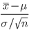
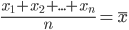
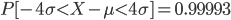
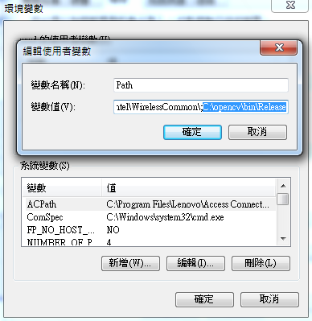
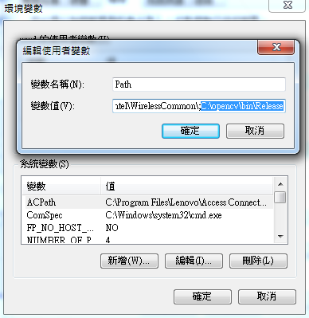

授權聲明
本雜誌採用 創作共用：姓名標示、相同方式分享 授權，若您想要修改本書產生衍生著作時，至少應該遵守下列授權條件：
- 標示原作者姓名
- 採用 創作共用：姓名標示、相同方式分享 的方式公開衍生著作。
另外、當本雜誌中有文章或素材並非採用 姓名標示、相同方式分享 時，將會在該文章或素材後面標示其授權，此時該文章將以該標示的方式授權釋出，請修改者注意這些授權標示，以避免產生侵權糾紛。
例如有些文章可能不希望被作為「商業性使用」，此時就可能會採用創作共用：姓名標示、非商業性、相同方式分享 的授權，此時您就不應當將該文章用於商業用途上。
最後、懇請勿移除公益捐贈的相關描述，以便讓愛心得以持續散播！
程式人短訊
軟體短訊 – CMake 專案檔產生工具
最近在建置 OpenCV 時，發現居然需要用 CMake 才能完成，於是只好想辦法瞭解 CMake 到底為何物？
原本以為 CMake 是與 GNU make 類似的另一套專案建置工具，就好像 Ruby 的 Rake 一樣，但後來發現我錯了！
CMake 並不是用來取代 GNU make 的東西，而是著眼於跨平台的問題，利用一套更上層的 make 工具，同時產生 GNU 的 Makefile 與 Visual Studio 的 .sln 專案檔的一種工具，這樣的方式可以解決平台所衍生的不相容問題。 或許我們可以稱 CMake 是一種「產生專案建置檔的工具」(Meta-Project Maker)。

CMake 官網的首頁
CMake 的歷史
CMake 是為了解決美國國家醫學圖書館出資的 Visible Human Project 專案下的 Insight Segmentation and Registration Toolkit (ITK) 軟體的跨平台建構的需求而創造出來的，其設計受到了 Ken Martin 開發的 pcmaker 所影響。pcmaker 當初則是為了支援 Visualization Toolkit (VTK) 這個開放原始碼的三維圖形和視覺系統才出現的，今日 VTK 也採用了 CMake。在設計 CMake 之時，Kitware 公司的 Bill Hoffman 採用了 pcmaker 的一些重要想法，加上更多他自己的點子，想把 GNU 建構系統 的一些功能整合進來。CMake 最初的實作是在 2000 年中作的，在 2001 年初有了急速的進展，許多改良是來自其他把 CMake 整合到自己的系統中的開發者，比方說，採用 CMake 作為建構環境的 VXL 社群就貢獻了很多重要的功能，Brad King 為了支援 CABLE 和 GCC-XML 這套自動包裝工具也加了幾項功能，通用電氣公司的研發部門則用在內部的測試系統 DART，還有一些功能是為了讓 VTK 可以過渡到 CMake 和支援洛斯阿拉莫斯國家實驗室的 Advanced Computing Lab 的平行視覺系統 ParaView 而加的。
使用 CMake 建置的軟體
使用 CMake 的應用軟體很多，以下是維基百科列出的軟體：
Allegro library, Armadillo - linear algebra library, Avidemux, Awesome, Blender 3D, Boost C++ Libraries, Bullet物理引擎, Chicken, Chipmunk physics engine, clang, Conky, Doomsday Engine, Drishti, Fennel, Gammu, GDCM, Gmsh, Hedgewars, Hypertable, hugin, IGSTK, Insight Segmentation and Registration Toolkit, KDE Software Compilation 4, Kicad, LMMS, LLVM, MiKTeX, MuseScore, MySQL (on Windows only), OGRE, OpenSceneGraph, OpenCV, OpenFLUID, ParaView, Poppler, PvPGN, Quantum GIS, Raw Therapee, Rem, Scribus, SuperTux, Slicer, Stellarium, The Visualization Toolkit, VXL, UFFS
仔細看的話，您會發現這些軟體可都是大有來頭阿！可見 CMake 現在已經廣受開放原始碼群體的重用了阿！
CMake 的使用方法
如果您想知道 CMake 的使用方法，請參考以下「井民全」先生的網誌文章：
- [程式設計] 最簡單的 CMake 使用說明 – how to use cmake -- http://mqjing.blogspot.tw/2009/09/cmake-how-to-use-cmake.html
參考文獻
- 維基百科:CMake
- CMake 入門：維基教科書，自由的教學讀本
- cmake 学习笔记(一)
- 最簡單的 CMake 使用說明 – how to use cmake
【本文由陳鍾誠取材並修改自維基百科】
硬體短訊 – Raspberry Pi 單板電腦
最近常聽網友們提到 Raspberry Pi ，引起了筆者的好奇，於是買了一本 「Raspberry Pi快速上手指南」， 發現這是一個大約信用卡大小的板子，卻可以外接「鍵盤、滑鼠、螢幕」等，成為一台完整的電腦。
這塊板子沒有 BIOS，預設採用 SD 卡開機，建議採用 Raspbian 這個作業系統，這是基於 Debian 的 Linux 系統。因此，您可以在上面跑大部分 Linux 可以跑的程式。
Raspberry Pi 採用 ARM 架構的 BroadCom BCM2835 處理器，以下是其實體圖照片：

Raspberry Pi 板子的外型
不知是哪位高人，把 Raspberry Pi 翻譯為「樹莓派」，害我一度以為這個東西是個食品廣告，想說怎麼這麼多 「嵌入式開發者」同時喜歡上這種「派」(就是哪種很多奶油、黏答答的那種，我不是很愛阿！)，而且這讓我想起了 前一陣子突然很多 Maker 都喜歡製造用來分離 Oreo 餅乾與奶油的機器，如下列影片所示：
- Youtube:OREO Separator Machine #1 - Creator: Physicist David Neevel
- Youtube:OREO Separator Machine #2 — Creators: Toy Scientists Bill and Barry
- Youtube:OREO Separator Machine #3 — Creator: Conceptual Artist Collective DENTAKU
- Youtube:OREO Separator Machine #4 — Creator: Robotic Butler HERB
言歸正傳，讓我們回到「樹莓派」上吧！這種派雖然很小，但還是可以跑得動 X-Windows 呢？這個派夠強悍吧！

運行 X window的樹莓派系統
參考文獻
【本文由陳鍾誠取材並修改自維基百科】
程式人介紹
大師風采 – Donald Ervin Knuth
如果您上過「資料結構」這門課，您可能會知道 B-Tree 這個多元樹結構，如果您修過「演算法」，您可能會聽過「Knuth–Morris–Pratt」這個字串搜尋演算法， 如果您修過編譯器，應該會知道 LR(K) 這類的語法剖析器，
如果您修過離散數學，您可能會知道有本書叫作「具體數學」(Concrete Mathematics)，事實上常被用來當離散數學的教科書。 為甚麼叫 Concrete Mathematics 呢？原因是 CONtinuous + disCRETE = CONCRETE，也就是「連續+離散數學=具體數學」。
如果您寫過論文，您可能會用過 LaTex、MikTex、或者用 LibreOffice 中的 TexMath 來寫數學式，甚至如果您寫過維基百科、或常用維基的方式寫網頁、 或者用過 pandoc 等軟體寫 markdown 格式的文章，您也可能會用 Tex 的格式來寫數學式。
以上這些事情，都與 Donald Ervin Knuth 有密切關連，這位生於 1938 年的著名電腦科學家，除了發明無數著名的演算法與資料結構之外，他還 發明了 LaTex 這個軟體，這個軟體直到現在都還有眾多的使用者，而其中的數學式之寫法，仍然在許多新的出版軟體裏被採用著。

Knuth 於 2005年10月25日的照片，Jacob Appelbaum 攝
筆者也是 Tex 數學式的愛用者，從 2007 年開始用 wikidot 以來就常用 Tex 寫數學式，之後用 LibreOffice 還是習慣安裝 TexMath 來寫 Tex，現在 用 markdown 寫書還是用 Tex 寫數學式，這都得感謝 Knuth (我可不希望用 MathML 寫數學式，因為真的會打到手斷掉！)。
(奇怪的是我念碩博士的時候從來沒想過要用 Tex 寫數學式，而是用 Word 的方程式編輯器，而且那時還不太會用 Word 的自動目錄， 論文的排版實在爛得可以，這樣居然也順利畢業了，真是僥倖。 -- 不過我的疑問是，學校怎麼從來沒人提過有「自動目錄」這件事啊？ 這不是研究生最應該學會的一件簡單事情嗎？冏！)
另外、Knuth 最為人稱道的，是他所寫的一部鉅著，總共預計出版七大冊的「The Art of Computer Programming」(事實上到目前為止只出到第四冊)， 稍微能看完其中一兩章的話，您就會對 Knuth 的邏輯頭腦感到非常驚訝。以下是該書的各冊標題與章節，您應該可以從中看出 Knuth 所涉略的領域。
第一冊 - 基礎演算法（Fundamental Algorithms）
第一章 - 基本觀念（Basic concepts）
第二章 - 資訊結構（Information structures）
第二冊 - 半數值演算法（Seminumerical Algorithms）
第三章 - 隨機數（Random numbers）
第四章 - 算數（Arithmetic）
第三冊 - 排序與搜尋（Sorting and Searching）
第五章 - 排序（Sorting）
第六章 - 搜尋（Searching）
第四冊 - 組合演算法 (Combinatorial Algorithms),準備中(至2009年4月已出版五個分冊),測試版本已上載到Knuth's的網站).
第4A卷, 列舉與回溯（Enumeration and Backtracking）
第七章 - 組合的搜尋（Combinatorial searching）
第4B卷, 圖形與網路演算法（Graph and Network Algorithms）
第七章續（continued）
第4C及4D(可能)卷, 最佳化與遞歸（Optimization and Recursion）
第七章續（continued）
第八章 - 遞歸（Recursion）
第五冊 - 造句演算法（Syntactic Algorithms）, 計劃中(預計2020年完成).
第九章 - 語句掃瞄（Lexical scanning）
第十章 - 剖析技術（Parsing techniques）
第六冊 - 與上下文無關語言理論（Theory of Context-Free Languages）, 計劃中
第七冊 - 編譯器技術（Compiler Techniques）,計劃中參考文獻
- Donald E. Knuth 在史丹佛的網站
- Wikipedia:Knuth
- 維基百科:Knuth
- 教授还是程序员？- Donald Knuth访谈录
- 解读高德纳（Donald E.Knuth） : 最伟大的计算机程序员是如何诞生的？
- 維基百科:電腦程式設計藝術
- LibreOffice:TexMath 插件
【本文由陳鍾誠取材並修改自維基百科】
程式人頻道
MIT 的自製電腦課程 – nand2tetris
偶然在網路上看到網友分享以下的 TED 影片 -- 「錫蒙‧蕭肯的電腦自修課程」：
錫蒙‧蕭肯是 MIT 的教授，他希望能夠讓學生學會自己動手做一台電腦，於是決定從 NAND 閘開始，然後建構出 CPU、組譯器、編譯器、虛擬機、作業系統、然後在上面寫一個小型打磚塊遊戲，於是他組織了一個團隊，並且 建立了一個網站，標題是「From NAND to Tetris -- Building a Modern Computer From First Principles」， 其網址如下：
為了介紹這個課程的全貌，錫蒙‧蕭肯在以下影片中介紹了整個計畫與課程的架構：
而且還針對這個課程出版了一本書，英文名稱是：「The Elements of Computing Systems: Building a Modern Computer from First Principles」 ，這本書還被大陸翻譯成中文版了，名稱是：「计算机系统要素：从零开始构建现代计算机」，您可以從下列網址看到其目錄與介紹：
中國大陸的 Yu Fang Ming 將這個課程中的 CPU 與程式改寫並放到了 FPGA 上去執行，您可以從下列影片中看到他的執行過程與結果：
雖然以上影片有提到「程式原始碼是開源的」，但可惜的是我沒有找到他所釋放出來的程式碼，不過我倒是找到了 另一個人實作該 CPU 的 Verilog 程式，網址如下：
我對這個計畫特別有興趣，因為這簡直就是我正在做的「開放電腦計畫」，這讓我與「自己動手做一台電腦」的距離又拉進了不少！
您可以在下列連結當中看到關於這個主題的討論帖，以取得進一步更完整的訊息：
【本文由陳鍾誠撰寫】
看影片學 C# 遊戲程式 (2) – 使用 Window Forms
上個月 Gary Lin 為我們講解了四集精彩的影片，從兩球互相追逐開始，然後逐步進入碰撞處理，一直到多個紅球藍球追逐等主題。
這個月 Gary Lin 又繼續為我們講解四集更精彩的教學，編輯將這個月的主題與網址分別整理如下：
| 影片名稱 | 網址 | 說明 |
|---|---|---|
| C# 遊戲程式設計 (04) | http://youtu.be/ExZqwulxLIw | 追逐球：子彈連發 |
| C# 遊戲程式設計 (05) | http://youtu.be/pULMs_Bi044 | 追逐球：加入計分 |
| C# 遊戲程式設計 (06) | http://youtu.be/DkQfeJd6JSI | 俄羅斯方塊：開始 |
| C# 遊戲程式設計 (07) | http://youtu.be/Fp0Ty9P71Vw | 俄羅斯方塊：第二集 |
| 遊戲測試影片 | http://youtu.be/cfUW89M3yeo |
【本文中的影片與教學由 Gary Lin 主講與提供，本文編輯者為陳鍾誠】
程式人討論區
C 語言討論 – 學校沒教的那些事兒！ -- 以矩陣相加為例
有朋友在「程式人雜誌」社團上問到有關 C 語言的參數傳遞問題，其討論帖如下：
筆者想藉此問題在此進行釐清與回答。
問題 1：C 語言的模組化問題
- 吳秉穎：不好意思可以問一個小問題嗎?
- 老師給我的題目:以同一程式主類別之外部二維矩陣相加方式將 Sales A&B 每個月相加，其結果再以不在同一程式方式與 Sales C 每個月相加和輸出結果。
- 因為要寫 C 跟JAVA，JAVA我是寫完了，但是不懂 C 要以不在同一程式方式寫是什麼意思? C 可以這樣寫嗎?
- 陳鍾誠：就是用兩個以上的 .c 檔，加上 .h 檔的方式，例如：main.c module1.c module2.c module1.h module2.h 的方式。
問題 2：矩陣參數與回傳值問題
- 吳秉穎：不好意思 請問一下 陣列怎回傳到主程式
#include <iostream>
#include<stdio.h>
#include<stdlib.h>
/* run this program using the console pauser or add your own getch, system("pause") or input loop */
int sum(int arr[4][3],int arr1[4][3]);
int sum1(int arr[4][3],int arr1[4][3]);
void show(int arr[4][3]);
int main(int argc,char *argv[]) {
int a[4][3],b[4][3],c[4][3],d[4][3];
printf("請輸入A&B&C報表: \n");
for(int i=0;i<4;i++)
{
for(int j=0;j<3;j++)
{
scanf("%d",&a[i][j]);
scanf("%d",&b[i][j]);
scanf("%d",&c[i][j]);
d[i][j]=a[i][j]+b[i][j];
}
printf("\n");
}
sum1(a,b);
sum(c,d);
system("pause");
return 0;
}
int sum1(int arr[4][3],int arr1[4][3])
{
int i,j,d[4][3];
for(i=0;i<4;i++)
{
for(j=0;j<3;j++)
{
d[i][j]=arr[i][j]+arr1[i][j];
}
}
show(d);
//return (d[4][3]);
} - 吳秉穎：現在卡在是 我想要把 SUM1 的 D 再傳到 SUM 裡跟 C 家再一起
- 李○○：你在函數參數內再放入一個陣列指標參數 將arr + arr1的值指派給他 不用迴傳就可以拿到此值了
- 吳秉穎：恩我試試看
- 李○○：你的函數宣告有很大的問題 參數型太沒人這樣用的吧@@
- 李○○：感覺你對於記憶體概念跟指標不是很熟
- 吳秉穎：對呀!還在學 ...
- 若○○：你丟指標過去到涵式裡面就可以傳陣列了，2 維 = (ptr)
- 若○○：
- 在 c 用標準的 stdio 涵式要小心很容易會爆掉 memory, 我舉例：scanf <= 這個涵式是要靠
\n或是\0斷尾，不然它會無止盡的去換算下去... - 就是說如果你在 a[y][x] 裡面的值不是標準的 byte 或是整斷的結尾的話，那麼... %d 可能會轉成亂七八糟的東西出來，爆 mem 機率很大，而 & 取指符號的用法是要一開始用的，我不知道在 a[y][x] 的地方可不可以取址，因為 c 沒有很高階，要先在 &a 這裡取址，然後 a[y][x] 的位置要用算的，= (ptr[x] * ptr[y])* ，不知道我這樣說對不對...
- 二維的意思是方形的區塊，但是在 mem 裡面是 (x * y)* 這樣代表 a[x][y]，所以一般都會先把維給轉成指標再去運算，在宣告的時候 int a[y][x] 這樣的用法在 c 語言是每一個 a[][] 都是 int 的區斷，並不是整個 int 如果你用 sizeof() 去取得就是得到 int (x * y) 那麼大的一塊 mem 區域，然後 a 和 b 的 array 不能夠直接去做 sum 運算...
- 因為 int (x * y) 在 c 裡面是看成單獨的 int (x * y) 而不是一整個可以放單一個數值的，不知道我這樣會不會越說越亂...
- 最後要回傳的值，必須要符合你一開始給涵數所宣告的遞迴值，你用 int 去宣告，就要符合 int 型態，你可以傳 int 的指標‧
- 在 c 用標準的 stdio 涵式要小心很容易會爆掉 memory, 我舉例：scanf <= 這個涵式是要靠
- 劉○○：請問樓上的大大 我該如何釐清所有程式的概念阿..
- 若○○：好問題... 我也弄不懂...
- 劉敦桐：我光 C 就1個頭兩個大了
- 若○○：我說一個經驗談好了，asm 是最基礎的機械語言，而 c 語言是把 asm 語言做成很多的 marco 巨集處理出來的二階語言，而更高階的 c++ 和 c# 語言則是將 c + 標準涵式庫再做一次 macro 處理的三階語言，所以在處理 memory 上有極高效率與穩定的特性，因此複雜度會高許多，但是因為高階語言所能夠容納的標處理器是更多，因此更貼合人類語言，所以感覺比較好學一點，其實許多觀念會比 asm 來的複雜不簡單的特性，我本身的感覺是透過基本的機械語言和 c 能夠去更了解實體的高階語言可能會有一些不一樣的想法...
- 吳秉穎 還有一些程式範例是 屏科老師的 我去他網站抓的
- 若○○ http://programming.im.ncnu.edu.tw/Chapter9.htm
- 若○○ *(p+10) = 100; // 相當於x[10] = 100
- 劉○○ 恩Q_Q
- 若○○ 2 維就是 ((ptr))
- 若○○ 用成的就可以指過去
- 若○○ 問一個小問題喔... int a[10]，在 a[1] - a[2] 的 mem 區域是怎麼編排的?!是 int a[1] + + a[2] 或是 a[1] + a[2] 無空隙?!還是 a[1] 的實際位址在 0x000001 而 a[2] 是在 0xffff00，而 int a[1] 裡面裝的到底是什麼?!0000 0000 0000 0000 ?!
- 李○○ 位置應該會連續吧 我指的是MMU來說 實體記憶體應該不一定會連續 裡面裝的值應該是亂碼嗎? 我有說錯嗎~~
- 陳鍾誠 是 a[1] + a[2] 無空隙
- 紀○○ 陣列是一段連續的記憶體a[1]-a[2]的位址距離是sizeof(int)的大小
- 陳鍾誠 只有字串才需要以 結尾，陣列是連續的空間。
- 陳鍾誠 對於有 MMU 的情況而言，在邏輯位址空間上仍然是連續的。但在實體位址空間就有可能有斷裂的情況。
問題 3 :矩陣參數與回傳值問題 (續)
- 吳秉穎：若再不用指標的方式將A[4][3]跟B[4][3]的兩個二維陣列傳到函數裡相加，也就是
for(int i = 0 ; i < 4 ; i++)
{
for(int j = 0 ; j < 3 ; j++)
{
D[i][j]=A[i][j]+B[i][j];
}
}- 我要如何將D陣列回傳到main裡，請問這方法可不可行。
- 若○○：int arr[10][10] main()...
- 吳秉穎：謝謝各位解說，所以如果我寫 void main(void) 這樣就無法接收回傳值對吧
筆者回覆與釐清
許多 C 語言的學習者都會有同樣的問題，但是卻往往學了很久之後還是不知道答案，有時摸索了很久自己找出一個答案，卻不見得就是好的方法。
以上的問題大致可歸結為兩個，第一個是「陣列的參數傳遞問題」，第二個是「程式的模組化問題」。
首先讓我們解答「陣列的參數傳遞問題」。
標準 C 語言的參數傳遞，基本上只有兩種，一種是傳值的參數 (通常用在基本型態上)，另一種是傳遞位址的參數 (通常用在陣列或結構上)。
舉例而言，在下列程式當中，函數 max 的參數 a, b 都是傳遞值的參數。而函數 sum 的參數 len 仍然是傳值的參數，但 a 則是傳遞位址的參數。
檔案：param.c
#include <stdio.h>
int max(int a, int b) {
if (a > b)
return a;
else
return b;
}
int sum(int a[], int len) {
int i, s=0;
for (i=0; i<len; i++) {
s += a[i];
}
return s;
}
int main() {
int x = 3, y = 5;
int z = max(x, y);
int array[] = { 1, 2, 3, 4, 5};
int s = sum(array, 5);
printf("x=%d y=%d z=%d s=%d\n", x, y, z, s);
}執行結果：
D:\Dropbox\Public\c>gcc param.c -o param
D:\Dropbox\Public\c>param
x=3 y=5 z=5 s=15對於傳值的參數，在傳遞時會複製一份該參數傳進函數，因此函數中的任何的修改都將不會影響到原來的正本， 因此下列程式中 modify(a) 函數呼叫後， a 的值仍然是 5，並不會改變。
檔案：modify1.c
#include <stdio.h>
int modify(int x) {
x += 3;
}
int main() {
int a = 5;
modify(a);
printf("a=%d\n", a);
}執行結果：
D:\Dropbox\Public\c>gcc modify1.c -o modify1
D:\Dropbox\Public\c>modify1
a=5但是對於傳遞位址的參數，如果我們採用類似的方法進行修改，那麼其內容將會被改變，因此下列程式中的 modify(a) 執行完之後，a[0] 的值將會變成 8。
檔案：modify2.c
#include <stdio.h>
int modify(int x[]) {
x[0] += 3;
}
int main() {
int a[] = { 5 };
modify(a);
printf("a[0]=%d\n", a[0]);
}執行結果：
D:\Dropbox\Public\c>gcc modify2.c -o modify2
D:\Dropbox\Public\c>modify2
a[0]=8事實上、傳址參數也有進行參數複製後傳遞的動作，但複製的是「記憶體位址」，而非參數內容，假如上述程式中 a 的記憶體位址為 100， 那麼當 modify(a) 被呼叫時，會將 100 複製一份後傳給 x，因此當 x[0] +=3 執行的時候，事實上是將記憶體位址 100 的內容 5 取出，然後 加上 3 ，於是記憶體位址 100 的內容就變成了 8，因此在程式執行完之後，a[0] (也就是記憶體位址 100 的內容) 的值也就變成 8 了。
對於上述的程式，如果我們改成指標的寫法，那麼程式碼將改寫如下：
#include <stdio.h>
int modify(int *x) {
x[0] += 3;
}
int main() {
int a[] = { 5 };
modify(a);
printf("a[0]=%d\n", a[0]);
}執行結果：
D:\Dropbox\Public\c>gcc modify3.c -o modify3
D:\Dropbox\Public\c>modify3
a[0]=8您可以看到這兩個版本，除了 int x[] 改為 int *x 之外，其餘的部分完全沒有改變，因為在 C 語言當中，陣列形態的參數事實上就是用 「位址」的方式傳遞的，而這也正是傳址參數的底層實作方式。
接著讓我們看看矩陣參數的傳遞問題，首先讓我們看看以下的二維陣列寫法。
檔案：matrix1.c
#include <stdio.h>
#define ROWS 4
#define COLS 3
void print(char *name, double M[ROWS][COLS]) {
int i, j;
if (name != NULL)
printf("================= %s ====================\n", name);
for(i = 0; i < ROWS; i++) {
for(j = 0; j < COLS; j++) {
printf("%4.1f ", M[i][j]);
}
printf("\n");
}
}
void add(double A[ROWS][COLS], double B[ROWS][COLS], double M[ROWS][COLS]) {
int i, j;
for(i = 0 ; i < ROWS ; i++) {
for(j = 0 ; j < COLS ; j++) {
M[i][j]=A[i][j]+B[i][j];
}
}
}
int main() {
double X[ROWS][COLS] = { {1, 2, 3}, {1, 2, 3}, {1, 2, 3}, {1, 2, 3} };
double Y[ROWS][COLS] = { {1, 1, 1}, {1, 1, 1}, {1, 1, 1}, {1, 1, 1} };
double Z[ROWS][COLS];
add(X,Y,Z);
print("X", X);
print("Y", Y);
print("Z", Z);
}執行結果
D:\Dropbox\Public\c\matrix>gcc matrix1.c -o matrix1
D:\Dropbox\Public\c\matrix>matrix1
================= X ====================
1.0 2.0 3.0
1.0 2.0 3.0
1.0 2.0 3.0
1.0 2.0 3.0
================= Y ====================
1.0 1.0 1.0
1.0 1.0 1.0
1.0 1.0 1.0
1.0 1.0 1.0
================= Z ====================
2.0 3.0 4.0
2.0 3.0 4.0
2.0 3.0 4.0
2.0 3.0 4.0您可以看到這樣的寫法感覺好像很正常，但事實上卻很沒有彈性，因為陣列大小都定死了，沒有辦法同時宣告 4*3 的陣列與 3*5 的陣列。
假如我們改用以下寫法，彈性就會大多了，因為可以宣告任意大小的二維陣列。
檔案：matrix2.c
#include <stdio.h>
void matrixPrint(char *name, double *M, int rows, int cols) {
int i, j;
if (name != NULL)
printf("================= %s ====================\n", name);
for(i = 0; i < rows; i++) {
for(j = 0; j < cols; j++) {
printf("%4.1f ", M[i*cols+j]);
}
printf("\n");
}
}
void add(double *A, double *B, double *M, int size) {
int i;
for(i = 0 ; i < size ; i++)
M[i] = A[i] + B[i];
}
#define matrixAdd(A, B, M, rows, cols) add(A, B, M, rows*cols)
int main() {
double X[4][3] = { {1, 2, 3}, {1, 2, 3}, {1, 2, 3}, {1, 2, 3} };
double Y[4][3] = { {1, 1, 1}, {1, 1, 1}, {1, 1, 1}, {1, 1, 1} };
double Z[4][3];
double *x = X[0], *y = Y[0], *z = Z[0];
matrixAdd(x, y, z, 4, 3);
matrixPrint("X", x, 4, 3);
matrixPrint("Y", y, 4, 3);
matrixPrint("Z", z, 4, 3);
double A[2][2] = { {1, 2}, {3, 4} };
double B[2][2] = { {1, 1}, {1, 1} };
double C[2][2];
double *a = A[0], *b = B[0], *c = C[0];
matrixAdd(a, b, c, 2, 2);
matrixPrint("A", a, 2, 2);
matrixPrint("B", b, 2, 2);
matrixPrint("C", c, 2, 2);
}註：讀者可能會感覺到奇怪，為何我們用 double *x = X[0] 這樣的語法，筆者原本是寫成 double *x = (double *) X 這樣的方式， 但是這樣的語法在 gcc 中是正確的，但有人在 Visual C++
當中編譯就錯了。而用 double *x = X[0] 這樣寫，因為 X 是二維陣列， X[0] 自然就是一維陣列，與 double *x 的形態相容，而且位址也對，所以就採用了這種寫法。
執行結果：
D:\Dropbox\Public\c\matrix>gcc matrix2.c -o matrix2
D:\Dropbox\Public\c\matrix>matrix2
================= X ====================
1.0 2.0 3.0
1.0 2.0 3.0
1.0 2.0 3.0
1.0 2.0 3.0
================= Y ====================
1.0 1.0 1.0
1.0 1.0 1.0
1.0 1.0 1.0
1.0 1.0 1.0
================= Z ====================
2.0 3.0 4.0
2.0 3.0 4.0
2.0 3.0 4.0
2.0 3.0 4.0
================= A ====================
1.0 2.0
3.0 4.0
================= B ====================
1.0 1.0
1.0 1.0
================= C ====================
2.0 3.0
4.0 5.0現在我們應該已經回答完 C 語言參數的傳遞問題了，接著讓我們來回答第二個問題，也就是 C 語言的模組化問題。
針對以上程式，我們通常不應該將主程式與矩陣函數撰寫在同一個檔案裏面，因此我們可以分開成兩個檔案：main.c 與 matrix.c 如下所示：
檔案：matrix.c
void matrixPrint(char *name, double *M, int rows, int cols) {
int i, j;
if (name != NULL)
printf("================= %s ====================\n", name);
for(i = 0; i < rows; i++) {
for(j = 0; j < cols; j++) {
printf("%4.1f ", M[i*cols+j]);
}
printf("\n");
}
}
void add(double *A, double *B, double *M, int size) {
int i;
for(i = 0 ; i < size ; i++)
M[i] = A[i] + B[i];
}
#define matrixAdd(A, B, M, rows, cols) add(A, B, M, rows*cols)檔案：main.c
#include <stdio.h>
#include "matrix.c"
int main() {
double X[4][3] = { {1, 2, 3}, {1, 2, 3}, {1, 2, 3}, {1, 2, 3} };
double Y[4][3] = { {1, 1, 1}, {1, 1, 1}, {1, 1, 1}, {1, 1, 1} };
double Z[4][3];
double *x = X[0], *y = Y[0], *z = Z[0];
matrixAdd(x, y, z, 4, 3);
matrixPrint("X", x, 4, 3);
matrixPrint("Y", y, 4, 3);
matrixPrint("Z", z, 4, 3);
double A[2][2] = { {1, 2}, {3, 4} };
double B[2][2] = { {1, 1}, {1, 1} };
double C[2][2];
double *a = A[0], *b = B[0], *c = C[0];
matrixAdd(a, b, c, 2, 2);
matrixPrint("A", a, 2, 2);
matrixPrint("B", b, 2, 2);
matrixPrint("C", c, 2, 2);
}編譯時您只要將兩個檔案放在同一個資料夾，就可以用下列指令編譯完成後執行，執行結果仍然與原本一樣。
gcc main.c -o matrix
matrix雖然以上的方式已經可以「分開撰寫、合併編譯」，但是仍然有一些缺陷，那就是每次要使用矩陣函式庫時， 都要用 #include "matrix.c" 指令將整個 matrix.c 引入並且重新編譯，這樣作會造成編譯速度緩慢的問題，
因此若要加快速度，可以將 matrix.c 先行編譯為目的檔 matrix.o，然後再將 matrix.c 當中的函數原型抽取 出來獨立成一個檔案
matrix.h，這樣不用每次都勞動編譯器重新編譯 matrix.c 檔，而且可以讓編譯器將 main.c matrix.h matrix.o
等檔案順利編譯連結成執行檔。
因此我們可以將上述程式改寫如下。
檔案：matrix.h
#define matrixAdd(A, B, M, rows, cols) add(A, B, M, rows*cols)
void matrixPrint(char *name, double *M, int rows, int cols);
void add(double *A, double *B, double *M, int size);檔案：matrix.c
#include <stdio.h>
#include "matrix.h"
void matrixPrint(char *name, double *M, int rows, int cols) {
int i, j;
if (name != NULL)
printf("================= %s ====================\n", name);
for(i = 0; i < rows; i++) {
for(j = 0; j < cols; j++) {
printf("%4.1f ", M[i*cols+j]);
}
printf("\n");
}
}
void add(double *A, double *B, double *M, int size) {
int i;
for(i = 0 ; i < size ; i++)
M[i] = A[i] + B[i];
}檔案：main.c
#include <stdio.h>
#include "matrix.h"
int main() {
double X[4][3] = { {1, 2, 3}, {1, 2, 3}, {1, 2, 3}, {1, 2, 3} };
double Y[4][3] = { {1, 1, 1}, {1, 1, 1}, {1, 1, 1}, {1, 1, 1} };
double Z[4][3];
double *x = X[0], *y = Y[0], *z = Z[0];
matrixAdd(x, y, z, 4, 3);
matrixPrint("X", x, 4, 3);
matrixPrint("Y", y, 4, 3);
matrixPrint("Z", z, 4, 3);
double A[2][2] = { {1, 2}, {3, 4} };
double B[2][2] = { {1, 1}, {1, 1} };
double C[2][2];
double *a = A[0], *b = B[0], *c = C[0];
matrixAdd(a, b, c, 2, 2);
matrixPrint("A", a, 2, 2);
matrixPrint("B", b, 2, 2);
matrixPrint("C", c, 2, 2);
}然後用下列指令編譯並執行 (其中的 -c 參數用來告訴編譯器只要編譯成目的檔就好，不需要進一步連結成執行檔)。
gcc -c matrix.c -o matrix.o
gcc main.c matrix.o -o main
main但是上述程式可能還會引起一些小問題，因為有些編譯器可能會對重複引用的行為產生警告或編譯錯誤的形況， 因此最好再加上引用防護，將 matrix.h 改寫如下。
檔案：matrix.h
#ifndef __MATRIX_H__
#define __MATRIX_H__
#define matrixAdd(A, B, M, rows, cols) add(A, B, M, rows*cols)
void matrixPrint(char *name, double *M, int rows, int cols);
void add(double *A, double *B, double *M, int size);
#endif如此就完成了將矩陣函數模組化的動作，事先將 matrix.c 編譯成目的檔 matrix.o，以縮短編譯時間，並且方便 使用者引用。
當然、如果您有很多模組，分別都編譯成目的檔，最好還是用 ar 指令將這些目的合併成函式庫，這樣就不用每次編譯 都要引用一大堆目的檔，只要引用對應的函式庫就可以了。
結語
對於初學 C 語言的朋友們而言，參數傳遞的誤解與型態的混淆是很常見的問題，不會使用 *.h 或撰寫引用防護也是很正常的事情。 C 語言是一個很困難的語言 (事實上、C 語言是筆者所學過的語言當中，我認為最困難的一個。不過最近發現 JavaScript 這個語言 有後來居上的趨勢 -- 或者說有些語法更不容易理解)，所以初學者在學習 C 語言時感到困難是很正常的事情。
我還記得自己在先前寫的一份網誌電子書上寫下了這一段話，在此與讀者分享：
當我還是一個大學生的時候，總覺得 C 語言就是這樣了。但是在 10 年後我進入職場時，才發現原來我並不太認識這個語言。產業界所使用的 C 語言有許多是大學所沒有教授過的，像是 #ifdef、make、GNU 工具等等。又過了 10 年，當我研究嵌入式系統時，這個感覺又出現了，我仍然不太認識 C 語言，嵌入式系統中所使用的「記憶體映射輸出入、volatile、組合語言連接、Link Script」等，又讓我耳目一新，我再度重新認識了 C 語言一次。然後，當我研讀 Linux 核心的程式碼時，看到 Torvalds 所使用的「鏈結串列、行程切換技巧」等，又再度讓我大為驚訝，C 語言竟然還可以這樣用。然後，當我開始研究 Google Android 手機平台的架構時，又看到了如何用 C 語言架構出網路、視窗、遊戲、瀏覽器等架構，於是我必須再度學習一次 C 語言。
當我翻閱坊間的書籍時，不禁如此想著，如果有人能直接告訴我這些 C 語言的學習歷程，那應該有多好。難道，我們真的必需花上數十年的時間去學習 C 語言，才能得到這些知識嗎？這些知識在初學者的眼中，看來簡直像是「奇技淫巧」。然而這些「奇技淫巧」，正是 C 語言為何如此強大的原因，我希望能透過這本書，告訴各位這些「奇技淫巧」，讓各位讀者不需要再像我一樣，花上二十年功夫，才能學會這些技術。
在我的眼中，C 語言就像一把鋒利的雙面刃，初出茅廬的人往往功力不夠深厚，反而將這個神兵利器往自己身上砍，因而身受重傷。但是在專家的手中，C 語言卻具有無比的威力，這種神兵利器具有「十年磨一劍、十步殺一人」的驚人力量。筆者希望能透過這本書，讓讀者能夠充分發揮 C 語言的力量，快速的掌握這個難以駕馭的神兵利器。
參考文獻
- 免費電子書：高等 C 語言(專業限定版) -- http://ccckmit.wikidot.com/cp:main
補充
在本文預覽版刊出之後，柏諺兄在 程式人雜誌社團 當中寫了一段精準的解說，於是我將這段解說放在這裏，作為補充：
在 C 語言裡面沒有 "傳遞陣列" 給函式的概念, 一直都是 call by value.
預備知識
當你在將 陣列名稱 傳遞給函式或是拿去作數值運算([], +)時, 你的運算元實際上是 "第一個元素的位址值", 我們在語言裡稱它為 decay(退化). 陣列不是指標, 但能夠退化成指標.
在 C/C++ 中型別是很重要的, 例如陣列 int array[ 2 ][ 3 ]: (array) 的數值跟 array[ 0 ]、&array[ 0 ][ 0 ] 一樣, 但是他們各自擁有不同的型別, 在運算上的差異甚大. 若以 "數值" 來理解這個語言那麼有可能在撰寫跨平台程式時產生非預期的bugs.
陣列和函式的型態跟一般內建型態不同, 是在變數的左右兩側, 例如一維陣列: int array[ 10 ], array 自己本身的型態是 int[ 10 ], 而成員型態則是 int; 二維陣列: int matrix[ 4 ][ 3 ], matrix 本身的型態是 int[ 4 ][ 3 ], 成員型態則是 int[ 3 ] (所代表的意義是: matrix 是一個 int[ 3 ] 陣列, 大小為 4 )
有這樣的理解我們就可以看懂更複雜的語法:
int add( int, int ), abs( int );上面程式碼是在 "宣告" 兩個函式: 1) 第一個是 add(), 有兩個 int 參數, 回傳值型態是 int 2) 第二個是 abs(), 只有一個 int 參數, 回傳值型態是 int
因為宣告時每個名稱能夠共用的只有型態的左邊部分, 但是右邊部分無法共用所以必須分開寫.
本文開始
在範例中的函式宣告(a):
void print(char *name, double M[ROWS][COLS]);有的人說 "最高維可以忽略", 所以延伸了第二種宣告方式(b):
void print(char *name, double M[][COLS]);但最正確的宣告則是第三種(c):
void print(char *name, double (*M)[COLS]);三者被 名稱修飾(Name Mangling) 出來的結果是一樣的, 但是你卻無法傳遞 int[ ROWS+1 ][ COLS ] 給 (a) --- 因為撰碼的人在宣告的地方自己加上最高維的限制使然.
當叫用 print( "Y", Y ) 時, Y 會被 decay(退化) 成指標, 因為 Y 的型態是 double[ROWS][COLS], 它的成員型態是 double[COLS], 那麼第一個元素的位址型態就是 double(*)[COLS] 所以我們參數應該寫成 (c) 而不是其它兩種. 一樣的概念適用在任何維度的陣列.
在 print() 內可以直接使用 M[ i ][ j ] 的語法來存取成員, M[ i ] 是對傳進來的連續 double[COLS] 中取第 i 個小陣列, [ j ] 則是拿出小陣列的第 j 個值, 想要達到陣列 slice 也不無可能.
用不適當的方法去傳遞多維陣列導致 M[i*cols+j] 這寫法反而有可能拖慢間接位址計算的速度.
順帶一提下面的宣告:
void matrixPrint(char *name, double *M, int rows, int cols); 語意上是 "給予一塊連續的 double 記憶體, 並且用額外的必要資訊 rows, cols 來存取該記憶體". 這邊我們看到的就只剩數個 double 小個體而不是整體概念 "矩陣", 所以傳遞的時候最好用 struct 包裝起來 "語意" 才會一樣.
軟體工程討論 – CMMI、Agile 與Scrum
4 月 10 日的一個討論帖，引發了網友們關於軟體工程的熱烈討論，您可以在下列連結當中看該討論帖，瞭解更完整的訊息：
經過這個討論，以及軟工專家 TML 的指點之後，我大致上歸納出了以下幾點心得：
- CMMI 是 Capability Maturity Model Integration (能力成熟度整合模型) 的英文縮寫，感覺有點像資訊領域的 ISO 9001，規定了軟體公司需要撰寫哪些文件。 CMMI 的認證共有五種等級，分別是 (1). 啟動 (initial) (2). 已管理 (Managed) (3). 已定義 (Defined) (4). 已量化地管理 (Quantitively Managed) (5). 最佳化中 (Optimizing)，如下圖所示：
CMMI 的五種成熟度等級
- 而 Agile (敏捷軟體開發)
則是一種「軟體工程」的精神，主要強調「較短的開發循環」，以及「漸進式開發與交付」，也就是採用較為彈性的一種軟體工程方法，其價值觀如下：
- 個人與互動 重於 流程與工具
- 可用的軟體 重於 詳盡的文件
- 與客戶合作 重於 合約協商
- 回應變化 重於 遵循計劃
在傳統的軟體工程分類上，通常將開發模式分類為「瀑布模式」與「螺旋模式」兩種，感覺上敏捷軟體開發有點像「螺旋模式」，但是強調的面向卻有所不同。
-
敏捷開發既然是一種精神，於是根據這種精神衍生出了一大群軟體工程方法，其中較廣為人知的幾種是 Scrum 、「極限編程」(XP Extreme Programming)、 Lean Software Development、AUP（Agile Unified Process）等軟體工程方法。
根據 TML 的說法，CMMI 與敏捷開發並不會互相衝突，CMMI 沒有強調工法，只要求最適合工法(process)，所以瀑布式是工法，agile 也是工法。至於 CMMI 的重點是記錄下工法的過程，如果好下次要沿用，不好下次改進，CMMI 是一個 process improvement 的框架！
很多 CMMI level 5 的公司也有引進 scrum 甚至 pair programming 等等當做其中的一個 process，因此兩者並不會互相衝突，舉例而言： PMI-Agile 的作法 就非常的嚴謹，而 Scrum 也在很多大公司被採用，Agile 絕對不是一種隨便修改軟體規格的方法。
參考文獻
以下是 TML 所提供的一些參考資料，
- 軟體工程與CMMI
- CMMI - MBA智库百科
- 敏捷社区的所有内容
- 軟體工程:持續整合 (Continuous integration, CI) 簡介 - In 91- 點部落
- Continuous Integration 【持續整合】與 Nightly Build【每日建置】+ Hudson 介紹 « Soul & Shell Blog
JavaScript 討論 – 繼承的實作方法
4 月 12 日，筆者在查詢 JavaScript 的繼承實作方法時，發了一個討論帖，網址如下：
令筆者驚訝的是，「良格葛」也來了，並且提供了很棒的文章！
討論內容
由於筆者在網路上看到的 JavaScript 繼承方法每個人都寫得不一樣，因此發了以下訊息：
javascript 的繼承好怪阿！越看越覺得不懂。
- http://ccckmit.wikidot.com/js:inheritance
- http://howtonode.org/prototypical-inheritance
- http://stackoverflow.com/questions/7486825/javascript-inheritance
- http://stackoverflow.com/questions/10357033/javascript-object-inheritance
- http://www.crockford.com/javascript/inheritance.html
- http://phrogz.net/JS/classes/OOPinJS2.html
- http://www.cnblogs.com/5201314/archive/2009/05/22/1487213.html
沒有人寫得一樣的???
因而引來了以下的討論 (摘錄)：
- 馮○○：Javascript內建的機制是prototype + constructor...不過物件的生成很自由，所以不一定非得這樣才能做出繼承的效果。
- ...
- 陳鍾誠 不過這種超強彈性我真的很喜歡！
- 陳鍾誠 就軟體工程的控制角度來看，這種設計可能會造成專案控管的很多問題，但是就程式語言的角度看，這種設計卻很彈性、自由且具有吸引力。
- 良格葛：JavaScript 的 prototype-based 特性，使得繼承的實現方式可以很多元化，主要還是得看需求為何？包括對建構式的需求、對檢驗物件的需求、對類別封裝的需求、想模擬哪種語言的外觀（像是有些程式庫是特地為熟悉 Java 的人而設計的，它們對繼承的模擬就會看來很像 Java）..., 唯一要記得的就是函式的 prototype 機制，實作的方式就因人而異了…
- 良格葛：http://openhome.cc/Gossip/JavaScript/Prototype.html 最後選用哪種實現機制，就是大家來討論統一，選定後就遵守，避免另行設計一套繼承模型…
- 良格葛：其實不只繼承，模擬任何 Class-based 機制，也都會有各種實現方式，即使是建構式也會有不止一種實現方式
- 陳鍾誠：良葛格兄的文章好讚！
- 良葛格：以版主的實現為例，最後會在 Student 的實例上新增一個 prototype 特性，而不是使用 Student 函式的 prototype 特性，這不能說對或錯，要看版主的目的而定，只是最後要讓使用的人也遵守這個模型。
例如有個人用另一種方式，在 Person 的 prototype 特性上新增 doSomething：
Person.prototype.doSomething = function(param) {
...
};那麼最後的 tony 參考的實例，會不會有 doSomething 方法呢？我想是不會的，只會得到一個 undefined，那麼那位使用者要怎麼擴充呢？他要打開 Person 加入：
function Person(name, age) {
this.name = name;
this.age = age;
this.toStr = function() {
return "Person:name="+this.name+" age="+this.age;
}
this.doSomething = function(param) {
…
};
}那麼在這個程式中，你是否允許他這麼作？就是一個考量了！如果不允許，也不希望他用 Person.prototype.doSomething 隨意擴充，那版主的設計就是可行的…
結論就是還是看需求…XD
- 陳鍾誠：瞭解，這就是 「多元化」的 JavaScript ！
- 陳鍾誠：似乎使用 「prototype + constructor+動態新增成員」 比較能精確抓到 javascript 物件的特性。
- 良葛格：一般來說，原型的目的是訴求自由度與實例的自我學習，原型若模彷類別通常是（約定要）放棄某些自由性，是一種慣例約束方式…
- 程式語言的特性本質（二）類別與原型的物件管理學 -- http://openhome.cc/Gossip/Programmer/ClassPrototypeBased.html
筆者心得
最近筆者用 Node.js + JavaScript 重寫開放電腦計畫的「編譯器、虛擬機、組譯器」等程式，發現可以比用比 C 語言短三倍的程式碼寫出相同的功能， 這讓筆者感覺到 JavaScript 真的是令人驚艷的一種語言，語法簡單卻彈性十足，筆者深深的被 JavaScript 所吸引了！
程式人文集
Arduino入門教學(5) – 多顆 LED 的控制 (作者：Copper Maa)
實驗：Lab5 LED Bar Graph
控制 LED 燈排 (LED Bar Graph)，製作出類似「霹靂遊俠」影集中「夥計」車頭 LED 燈排的掃瞄效果。LED Bar Graph 適合當作電池電量或音量之類的指示燈，其外觀如下：
材料
麵包板 x 1 Arduino 主板 x 1 LED bar garph x 1 或是 LED x 10 220 ohm 電阻 x 10 單心線 x N 接線
把 LED bar graph 或 10 顆 LED 接到 pin2 到 pin11 腳 。LED 的接法為: 長腳(陽極)接到 pin 腳，短腳(陰極)串接一顆 220 ohm 電阻接到 GND
電路圖
程式碼: LEDBarGraph.pde
// these constants won't change:
const int ledCount = 10; // the number of LEDs in the bar graph
int ledPins[] = {
2, 3, 4, 5, 6, 7,8,9,10,11 }; // an array of pin numbers to which LEDs are attached
void setup() {
// loop over the pin array and set them all to output:
for (int thisLed = 0; thisLed < ledCount; thisLed++) {
pinMode(ledPins[thisLed], OUTPUT);
}
}
void loop() {
// loop over the LED array
// Go from right to left
for (int thisLed = 0; thisLed < ledCount; thisLed++) {
digitalWrite(ledPins[thisLed], HIGH);
delay(60);
digitalWrite(ledPins[thisLed], LOW);
}
// And from left to right again
for (int thisLed = ledCount -1 ; thisLed >= 0; thisLed--) {
digitalWrite(ledPins[thisLed], HIGH);
delay(60);
if (thisLed == 0) {
// 跑完一輪後，讓第一顆 LED 亮著暫停一下
delay(200);
} else {
digitalWrite(ledPins[thisLed], LOW);
}
}
}說明：
- L04: 宣告 ledPins 陣列並定義 LED bar 或 10 顆 LED 所在的腳位，在此使用 pin2 到 pin11 這 10 支腳位
- L17~L20: 讓 LED 產生掃瞄的效果，先由右往左
- L23~L33: 繼續讓 LED 產生掃瞄的效果，這次換成由左往右。跑完一輪後(先由右往左，再由左往右，這樣算一輪)，不關閉第一顆 LED 燈號，讓第一顆 LED 暫停一下
動動腦
接上一顆可變電阻，利用可變電阻來控制 LED bar graph。提醒：使用 analogRead() 讀進來的可變電阻數值介於 0 到 1023，程式的邏輯可以這樣寫：介於 0 – 99 就開第一顆 LED、介於 100 – 199 開第二顆 LED、介於 200 – 299 開第三顆…，也可以先利用 map() 函式將 0 到 1023 的數值對應為 0 到 9 之間的數值，然後再決定開哪些 LED。
範例照片／影片
延伸閱讀
- LED 10-bar array -- http://www.sqlskills.com/blogs/paulselec/post/Arduino-projects-LED-10-bar-array.aspx
【本文作者為馬萬圳，原文網址為： http://coopermaa2nd.blogspot.tw/2010/12/arduino-lab5-led-bar-graph.html ，由陳鍾誠編輯後納入本雜誌】
JavaScript (5) – 在互動網頁中的應用，以 HTML 編輯器為例 (作者：陳鍾誠)
在本文當中，我們將透過 JavaScript 設計一個 HTML 編輯器，讓您可以直接在瀏覽器當中看到 HTML 網頁的呈現結果， 筆者認為這個範例對學習動態網頁設計是一個非常簡單、卻又很有啟發性的程式。因為他很明顯的展現了動態網頁的原理。
HTML 編輯器
以下是該 HTML 編輯器的執行結果，當我們在 CSS 與 HTML 區塊輸入對應的原始碼之後，就可以按下「→」按鈕，然後在 呈現的 <div id="showbox" ...</div> 區塊看到兩者搭配時的呈現結果。

HTML 編輯器的執行畫面
您也可以點選下列連結以實際檢視該網頁：
以下是這個網頁的原始 HTML 程式碼，其中有兩大段是我們預設填入的 CSS 與 HTML 原始碼，這兩段原則上可以去掉，但是 為了測試方便起見，我們就留在檔案中，請讀者閱讀的時候仔細區分之。
<html>
<style>
textarea, #showbox { border: 1px solid #9f9f9f; }
</style>
<style id="showboxstyle">
</style>
<script type="text/javascript">
function convert() {
var cssbox = document.getElementById("cssbox");
var editbox = document.getElementById("editbox");
var showbox = document.getElementById("showbox");
var showboxstyle = document.getElementById("showboxstyle");
showbox.innerHTML = editbox.value;
showboxstyle.innerHTML = cssbox.value;
}
</script>
<body>
<form>
<table width="95%" style="border-collapse: collapse; border: 0px;"><tr>
<tr><td colspan="2" style="text-align:center">HTML 原始碼 <input type="button" value=" → " onclick="JavaScript:convert()"/> 顯示結果</td></tr>
<td width="50%">
<textarea id="cssbox" style="width:100%; height:100px;" >
<!-- 預設貼入的CSS：開始 -->
td, th { padding:10px; }
th { background-color:black; color:white; }
table { border-collapse: collapse; border: 1px solid #373737; }
<!---預設貼入的CSS：結束 -->
</textarea>
<textarea id="editbox" style="width:100%; height:400px;">
<!-- 預設貼入的HTML：開始 -->
Hello! <a href="http://tw.yahoo.com">Yahoo</a><br/></br>
<table>
<tr><th></th><th>欄 1</th><th>欄 2</th></tr>
<tr><th>列 1</th><td>1,1</td><td>1,2</td></tr>
<tr><th>列 2</th><td>2,1</td><td>2,2</td></tr>
</table><br/>
<form action="signup" method="post">
帳號: <input type="text" name="user"/><br/>
密碼: <input type="password" name="password"/><br/>
信箱: <input type="email" name="email"/><br/>
生日: <input type="date" name="birthday"/><br/>
照片: <input type="file" name="picture"/><br/>
性別: <input type="radio" name="sex" value="male" checked/> 男
<input type="radio" name="sex" value="female"/> 女<br/>
血型: <select name="BloodType">
<option value="A">A 型</option>
<option value="B">B 型</option>
<option value="AB">AB 型</option>
<option value="O">O 型</option>
</select> <br/>
自我介紹： <br/>
<input type="submit" value="送出"/><input type="reset" value="清除"/><br/>
</form>
<!-- 預設貼入的HTML：結束 -->
</textarea>
</td>
<td>
<div id="showbox" style="width:100%; height:500px;">
</div>
</td>
</tr></table>
</form>
</body>
</html>程式解析
上述程式當中有三個主要的區塊，分別是：
- CSS 填入區塊：
<textarea id="cssbox" ...</textarea> - HTML 填入區塊：
<textarea id="editbox" ...</textarea> - HTML 顯示區塊：
<div id="showbox" ... </div>
此網頁的核心程式部分真的很簡單，只有如下短短的一小段：
- 利用
var editbox = document.getElementById("editbox");取得 HTML 區塊內容 - 利用
showbox.innerHTML = editbox.value;這個指令將該 HTML 原始碼填入 showbox 當中
這樣就完成顯示 HTML 的動作了。
function convert() {
var cssbox = document.getElementById("cssbox");
var editbox = document.getElementById("editbox");
var showbox = document.getElementById("showbox");
var showboxstyle = document.getElementById("showboxstyle");
showbox.innerHTML = editbox.value;
showboxstyle.innerHTML = cssbox.value;
}但是這樣作並沒有加入 cssbox 的內容到 HTML 當中，因此我們加入了下列原始碼：
- 在整個網頁的頭部事先用
<style id="showboxstyle">...</style>這個標記加入一個 CSS style 顯示區塊 - 利用
showboxstyle.innerHTML = cssbox.value這個指令將 cssbox 的內容填入到該表頭的 style 區塊中
這樣就達成了套用 CSS 內容到網頁中的目的，完成了整個 HTML 編輯器的功能。
結語
在本文中，我們用非常簡單的程式，建構了一個 HTML 編輯器。事實上我們只不過是把網頁內容從編輯區域移動到顯示區域，然後流覽器就會 自動解釋這些內容進行呈現了。
在本系列的文章中，關於瀏覽器部分的 JavaScript 程式，我們將至此告一個段落，在下一期當中，我們將開始進入伺服端的 javascript 程式。 我們將利用 node.js 這個伺服端 JavaScript 執行平台，進一步探索 JavaScript 程式的奧秘，我們下期見！
參考
- http://stackoverflow.com/questions/1720320/how-to-dynamically-create-css-class-in-javascript-and-apply
- http://dev.opera.com/articles/view/dynamic-style-css-javascript/
R 統計軟體(3) – 中央極限定理 (作者：陳鍾誠)
中央極限定理是機率統計上最重要的定理之一，整個統計的估計與檢定幾乎都建立在這個定理之上，因此 對「中央極限定理」有清楚的理解是學好機率統計的一個關鍵。
在本文中，我們將利用 R 軟體實作並驗證「中央極限定理」，讓讀者能透過程式實際體會該定理的重要性與用途。
中央極限定理簡介
中央極限定理的數學式：")
如果用白話文陳述，那就是說 n 個樣本的平均數 .png "\bar{x}") 會趨近於常態分布。
會趨近於常態分布。
更精確一點的說，當您從某個母體 X 取出 n 個樣本，則這 n 個樣本的平均數 會趨近於以平均期望值 .png "\mu") 為中心， 以母體標準差
為中心， 以母體標準差 .png "\sigma") 除以
除以 的值
.png "\sigma/\sqrt{n}") 為標準差的常態分布。
為標準差的常態分布。
如果採用另一種正規化後的公式寫法，也可以將上述的「中央極限定理」改寫為：.png "\frac{\bar{x}-\mu}{\sigma/\sqrt{n}} \rightarrow Z")
其中的 Z 是指標準常態分部，也就是  會趨近標準常態分布。
中央極限定理的用途
根據上述的定義，我們知道當樣本數 n 足夠大時 (通常 20 個以上就夠大了)， n 個樣本的平均值 .png "\frac{x_1+x_2+...+x_n}{n}")
(也就是
)
會趨近於常態分布，換句話說也就是
會趨近於標準常態分布。
因此、當我們取得一組樣本之後，我們就可以計算其平均數 
，如果有人告訴我們說母體的 平均數 的值是多少，我們就可以看看 與 是否差距很遠，如果差距很遠，導致
來自平均數
母體的機率很小，那麼很可能是此組樣本是非常罕見的特例，或者該組樣本的抽樣有所偏差，也就是該組樣本很可能並非來自平均數為 的母體。
以下是一些標準常態分布的重要數值，
![P[-\sigma < X - \mu < \sigma] = 0.68](pmagIE.files/chart(9).png "P[-\sigma < X - \mu < \sigma] = 0.68")
![P[-2 \sigma < X - \mu < 2 \sigma] = 0.95](pmagIE.files/chart(10).png "P[-2 \sigma < X - \mu < 2 \sigma] = 0.95")
![P[-3 \sigma < X - \mu < 3 \sigma] = 0.997](pmagIE.files/chart(11).png "P[-3 \sigma < X - \mu < 3 \sigma] = 0.997")
- 
![P[-5 \sigma < X - \mu < 5 \sigma] = 0.9999994](pmagIE.files/chart(13).png "P[-5 \sigma < X - \mu < 5 \sigma] = 0.9999994")
![P[-6 \sigma < X - \mu < 6 \sigma] = 0.999999998](pmagIE.files/chart(14).png "P[-6 \sigma < X - \mu < 6 \sigma] = 0.999999998")
> pnorm(1)-pnorm(-1)
[1] 0.6826895
> pnorm(2)-pnorm(-2)
[1] 0.9544997
> pnorm(3)-pnorm(-3)
[1] 0.9973002
> pnorm(4)-pnorm(-4)
[1] 0.9999367
> pnorm(5)-pnorm(-5)
[1] 0.9999994
> pnorm(6)-pnorm(-6)
[1] 1
> options(digits=10)
> pnorm(6)-pnorm(-6)
[1] 0.999999998從上面的數值您可以看出來，管理學上所謂的六標準差其實是很高的一個要求，也就是良率必須要達到 99.9999998% 以上才行。
如果您今天所取的 n 個樣本，與母體平均數 距離兩個標準差以上，那就很可能有問題了，這種推論稱為檢定，我們可以用 R 軟體中的
t.test 函數來檢驗這件事，我們將在下一期當中說明如何用 R 軟體進行統計檢定的主題，讓我們先將焦點移回到中央極限定理身上，用 R 軟體
來驗證該定理。
R 程式範例：驗證中央極限定理
> u <- matrix ( runif(500000), 50, 10000 )
> y <- apply ( u, 2, mean )
> hist(u[,1])
> hist(y)
> ?apply
> 說明：
- u 乃是將 50 萬個 uniform 樣本分配成 50*10000 的矩陣，
- y 對 u 進行列統計 apply ( u, 2, mean ) 代表對每行取平均值 mean(col of u) 的結果。
- 因此 y 代表從 Uniform Distribution 中每次取出 50 個樣本，然後進行加總平均 (x1+x2+...+x50)/50 的結果。
- 從下列的 hist(y) 圖形中，我們可以看到中央極限定理的證據：[[$ i = mean(xi[1,50])$ 會趨向常態分布。
![圖、hist(u[,1]) 畫出的圖形](pmagIE.files/HistU.jpg)
圖、hist(u[,1]) 畫出的圖形
圖、hist(y) 畫出的圖形
CLT = function(x) {
op<-par(mfrow=c(2,2)) # 設為 2*2 的四格繪圖版
hist(x, nclass=50) # 繪製 x 序列的直方圖 (histogram)。
m2 <- matrix(x, nrow=2, ) # 將 x 序列分為 2*k 兩個一組的矩陣 m2。
xbar2 <- apply(m2, 2, mean) # 取每兩個一組的平均值 (x1+x2)/2 放入 xbar2 中。
hist(xbar2, nclass=50) # 繪製 xbar2 序列的直方圖 (histogram)。
m10 <- matrix(x, nrow=10, ) # 將 x 序列分為 10*k 兩個一組的矩陣 m10。
xbar10 <- apply(m10, 2, mean) # 取每10個一組的平均值 (x1+..+x10)/10 放入 xbar10 中。
hist(xbar10, nclass=50) # 繪製 xbar10 序列的直方圖 (histogram)。
m20 <- matrix(x, nrow=20, ) # 將 x 序列分為 25*k 兩個一組的矩陣 m25。
xbar20 <- apply(m20, 2, mean) # 取每20個一組的平均值 (x1+..+x20)/20 放入 xbar20 中。
hist(xbar20, nclass=50) # 繪製 xbar20 序列的直方圖 (histogram)。
}
CLT(rbinom(100000, 20, 0.5)) # 用參數為 n=20, p=0.5 的二項分布驗證中央極限定理。
CLT(runif(100000)) # 用參數為 a=0, b=1 的均等分布驗證中央極限定理。
CLT(rpois(100000, 4)) # 用參數為 lambda=4 的布瓦松分布驗證中央極限定理。
CLT(rgeom(100000, 0.5)) # 用參數為 n=20, m=10, k=5 的超幾何分布驗證中央極限定理。
CLT(rhyper(100000, 20, 10, 5)) # 用參數為 p=0.5 的幾何分布驗證中央極限定理。
CLT(rnorm(100000)) # 用參數為 mean=0, sd=1 的標準常態分布驗證中央極限定理。
CLT(sample(1:6, 100000, replace=T)) # 用擲骰子的分布驗證中央極限定理。
CLT(sample(0:1, 100000, replace=T)) # 用丟銅板的分布驗證中央極限定理。以下是這些指令的執行結果，從這些圖中您可以看到當樣本數到達 20 個的時候，幾乎每種樣本都會趨向常態分布。

圖、指令 CLT(rbinom(100000, 20, 0.5)) 的執行結果

圖、指令 CLT(runif(100000)) 的執行結果

圖、指令 CLT(rpois(100000, 4)) 的執行結果

圖、指令 CLT(rgeom(100000, 0.5)) 的執行結果

圖、指令 CLT(rhyper(100000, 20, 10, 5)) 的執行結果

圖、指令 CLT(rnorm(100000)) 的執行結果

圖、指令 CLT(sample(1:6, 100000, replace=T)) 的執行結果

圖、指令 CLT(sample(0:1, 100000, replace=T)) 的執行結果
參考文獻
- The Central Limit Theorem (Part 1)
- 洋洋 -- 淺談機率上的幾個極限定理
- Proof of Central Limit Theorem, H. Krieger, Mathematics 157, Harvey Mudd College, Spring, 2005
- Central limit theorem:From Wikipedia, the free encyclopedia
- Two Proofs of the Central Limit Theorem, Yuval Filmus, January/February 2010
OpenCV (1) – C 語言影像辨識函式庫 -- 簡介、安裝與基本範例 (作者：Da Wang)
OpenCV 是 Intel 所釋出的一組影像辨識函式庫，功能相當強大，從本期開始， 我們將刊載由 Da Wang 一連串的 OpenCV 系列文章，讓讀者得以透過這些文章 進入影像辨識與處理的領域，這些文章的原文網誌位於以下網址：
然而、網誌中的文章是 2008 年開始寫的，因此在使用的 OpenCV 版本上有些許落差， 為了彌補這樣的問題，編輯請 Da Wang 幫我們補充了最新的 OpenCV 2.44 版的程式示範，這個新版採用 cmake 建置軟體，可以編出 GNU make 專案或 Visual Studio 的專案，讓讀者能透過這樣的示範順利的執行 網誌中的這些程式。
簡介
OpenCV(Open Source Computer Vision) : 由Intel公司所開發出來的Open Source圖形演算法的函式庫(Image Process Libary)可以製做圖片，視訊，矩陣運算，統計，圖論，資料儲存的相關 C 語言程式設計，
相關的領域為:影像處理，電腦視覺，圖形識別，電腦圖學，資訊檢索或遊戲設計，比較有名的製作為物體追蹤，人臉辨識，傅立葉轉換，紋理分析， 可以整合不同圖檔格式的矩陣運算，應用在靜態圖片(BMP,JPG,TIF,PNG) ，動態Webcam的影像處理。
OpenCV 的組成為許多圖形處理的資料結構及演算法所疊合而成， 因此需要一些基本的資料結構基礎， 比如說 struct 怎麼使用， 如何 release 資料結構的空間等基本操作，會使用到 linked list 的算少數， 算是C語言中級程式設計， 有興趣玩的話，國內影像處理領域相關論文演算法幾乎都可以在OpenCV找的到，方便學術界用c語言推演更進階的影像處理演算法， 功能好比Matlab，但比Matlab快上許多倍，更可以整合c語言相關函式庫，做更多元強大的功能應用，然而它最大的門檻是比 Matlab 的進入障礙還高一些， 運用到許多資料結構，指標運算，記憶體位址，學完OpenCV，相信程式設計的功力更可以技高一籌。
OpenCV 提供了簡單的GUI介面， 他無法像 MicroSoft Visual C++ 的 MFC 及 Borland C++builder 的 VCL 那麼完整，但如果是對於學術領域的研究是夠用的，他也可以整合在Visual C++及C++ builder的環境上， 而本人是以Dev - C++為主， 屬於最基本簡單又不須付費的 Complier。
接下來進入 OpenCV 最基礎的入門， OpenCV 最常用的函式庫為 "cv.h"，"highgui.h"，"cxcore.h"及"cvaux.h.h"，"cv.h"代表Computer Vision， 電腦視覺函式庫， "highgui.h"， 當然就是GUI介面的函式庫啦， 當路徑都設定好之後(第一篇安裝方法)， 直接在開頭include進去就好啦，就跟stdio.h的使用方法一樣
#include <stdio.h>
#include <cv.h>
#include <highgui.h>
#include <cxcore.h>
#include <cvaux.h>顯示靜態圖片
接著，就介紹最基本的資料結構，IplImage，此資料結構是所有圖檔的一個中介，圖檔格式有很多種(bmp,jpg,png,tif)，此資料結構的內容既不是bmp，也不是jpg，而是一個藉由cvLoadImage()所轉換的自定義格式如下所示:
讀入圖片之後，要怎麼知道圖片真的讀入了呢，就利用"highgui.h"的功能來檢視看看吧。
cvNamedWindow("Show Image",0);
cvResizeWindow("Show Image",300,400);
cvShowImage("Show Image",Image1);要使用 OpenCV 的 GUI 時， 要先給視窗名稱命名， 這算是比較好寫的GUI之ㄧ了， 裡面"Show Image"就是這個視窗的名稱，cvResizeWindow()就是調整視窗大小，視窗大小被設定在300*400，並指定視窗的名稱，再來，就是顯示視窗的圖片cvShowImage()，並且給予IplImage資料結構的結構變數，Image1裡面必須要先用cvLoadImage()存入圖檔，接著，再用鍵盤事件cvWaitKey(0)來做阻斷，一張圖片就可以被開啟啦，這是OpenCV最基本的操作之ㄧ，也像是c語言的"hello world"的開始，恭喜跨入第一步。
當資料結構被創立之後，當然要做回收的動作啦，在這邊IplImage的資料結構被創立，視窗介面的資料結構也被創立，當執行完就要做回收的動作啦，所有的資料結構都會被malloc()的副程式配置空間，而cvLoadImage()只是把一連串的動作隱藏起來，cvLoadImage()不但做了配置IplImage的資料結構空間，也把所有副檔名格式的資料初始化，將所有的數值及一些簡單的分析都存在IplImage的資料結構內，方便做一些圖形演算法的運算，而視窗介面被cvNamedWindow()給創立，視窗的資料結構被隱含在cvNamedWindow()中，使用者只要使用"Show Image"等命名操控就可以使用GUI視窗的控制，這是一種分層抽象的概念，比較複雜的部份被程式碼包再它的下一層，因此，我只要操控該視窗的字串名稱("Show Image")就可以做任何想要的動作了。
這邊用cvDestroyWindow()及cvReleaseImage()回收給系統，回收的東西是記憶體，一般來說，不做記憶體回收也不會影響電腦的效能太大，作業系統也會自動的做垃圾收集，把一些沒意義的記憶體做刪除，因此程式碼不多這兩行也不會有太大的影響，不過這種東西畢竟是卡記憶體的，也不能確定它是不是永久卡位(電腦關機後一定消失)，因此，養成良好的習慣是程式設計師必備的，尤其是再做一個大的應用程式的時候。
簡單的OpenCV讀取圖形檔案程式碼
#include <stdio.h>
#include <cv.h>
#include <highgui.h>
int main()
{
char FileName[10]="rain.jpg";
IplImage *Image1 = cvLoadImage(FileName,1);
cvNamedWindow("Show Image",0);
cvResizeWindow("Show Image",300,400);
cvShowImage("Show Image",Image1);
cvWaitKey(0);
cvDestroyWindow("Show Image");
cvReleaseImage(&Image1);
}圖片:

執行結果:

使用 WebCam 抓取動態影片
視訊的使用也是OpenCV的基本功能之一，它可以做連續性的影像處理，比capCreateCaptureWindow()這個函式好用多了， capCreateCaptureWindow()在"vfw.h"裡，只能在MicroSoft的Visual C++及 Borland C++ builder 使用， Dev-C++4.9.9.2 不提供此函式， 當然啦， OpenCV對於視訊的處理提供了比capCreateCaptureWindow()更強大的功能。
程式碼部份
#include <cv.h>
#include <highgui.h>
#include <stdio.h>
int main()
{
CvCapture *capture;
IplImage *frame;
capture =cvCaptureFromCAM(0) ;
cvNamedWindow("Webcam"，0);
while(true)
{
frame = cvQueryFrame(capture);
cvShowImage("Webcam",frame);
if(cvWaitKey(10)>=0)
{
break;
}
}
cvReleaseCapture(&capture);
cvDestroyWindow("Webcam");
}裡面使用到CvCapture及IplImage兩個資料結構，CvCapture是一個Interface的資料結構，為一個資料結構的雛形，無任何的變數型別存在，由cvCaptureFromCAM(0)來選定Webcam裝置，cvCaptureFromCAM(0)的0代表自動偵測視訊裝置，如果有兩台以上的Webcam則就用連續兩個cvCaptureFromCAM(0)函式來擷取，接著，就用while(true)的無窮回圈來捕捉連續影像的圖形畫面，cvQueryFrame()則用來擷取每秒顯示出來的frame這裡由cvWaitKey(10)來控制擷取時間，每延遲10毫秒捕捉一次視訊畫面，cvWaitKey()為鍵盤事件，每超過10毫秒則會回傳-1，因此，畫面會因cvWaitKey(10)而延遲10毫秒，接著由無窮回圈來繼續播放，當鍵盤事件發生的時候則會跳出whlie的無窮回圈，接著就把CvCapture資料結構及視窗介面資料結構做記憶體的釋放。
執行結果:

OpenCV 2.44 版的安裝與使用 (搭配 CMake 與 Visual Studio)
下載並安裝 CMake , OpenCV
下載 CMAKE : http://www.cmake.org/

下載 OpenCV：http://opencv.org/downloads.html

開啟檔案選擇 c:\

安裝 CMAKE

透過 CMAKE 建置 OpenCV 專案
開啟CMAKE選擇路徑 c:\opencv，點選 configure

選擇編譯器種類

如何看編譯器呢? 方法是從Visual Studio menu 上面點選說明 (我的 Visual Studio 2012 為 Visual Studio 11)

勾選Build Example，並按下Generate
Visual Studio 2012 的專案 sln 檔將會自動產生

開啟後，選取「Debug Mode 建製方案」或「Release Mode建製方案」

設定動態鏈結函式庫路徑(DLL檔) (位於「控制台->進階->環境變數」)
 

OpenCV 的 VS 2012 Vusual C++ 環境設立
開啟一個空專案test，一個source.cpp檔，選取屬性管理員

選取 Microsofr.Cpp.Win32.user 設定

設定 VC++ 目錄的
- Include目錄
- 程式目錄

加入以下項目
C:\opencv\build\include
C:\opencv\lib\Release

點選連結器->輸入

加入以下項目
opencv_core244.lib
opencv_calib3d244.lib
opencv_contrib244.lib
opencv_features2d244.lib
opencv_highgui244.lib
opencv_imgproc244.lib
建置方案

原文連結
【本文原始作者為 Da Wang, 由陳鍾誠編輯加註後納入雜誌】
雜誌訊息
讀者訂閱
程式人雜誌是一個結合「開放原始碼與公益捐款活動」的雜誌，簡稱「開放公益雜誌」。開放公益雜誌本著「讀書做善事、寫書做公益」的精神，我們非常歡迎程式人認養專欄、或者捐出您的網誌，如果您願意成為本雜誌的專欄作家，請加入 程式人雜誌社團 一同共襄盛舉。
我們透過發行這本雜誌，希望讓大家可以讀到想讀的書，學到想學的技術，同時也讓寫作的朋友的作品能產生良好價值 – 那就是讓讀者根據雜誌的價值捐款給慈善團體。 讀雜誌做公益也不需要有壓力，您不需要每讀一本就急著去捐款，您可以讀了十本再捐，或者使用固定的月捐款方式，當成是雜誌訂閱費，或者是季捐款、一年捐一次等都 OK ! 甚至是單純當個讀者我們也都很歡迎！ 本雜誌每期參考價：NT 50 元，如果您喜歡本雜誌，請將書款捐贈公益團體。例如可捐贈給「羅慧夫顱顏基金會 彰化銀行(009) 帳號：5234-01-41778-800」。(若匯款要加註可用「程式人雜誌」五個字)
想訂閱本雜誌的讀者，請按 雜誌訂閱 連結並填寫表單，我們會在每一期雜誌出刊時寄送通知與下載網址到您的信箱。
投稿須知
給專欄寫作者： 做公益不需要有壓力。如果您願意撰寫專欄，您可以輕鬆的寫，如果當月的稿件出不來，我們會安排其他稿件上場。
給網誌捐贈者： 如果您沒時間寫專欄或投稿，沒關係，只要將您的網誌以 [創作共用的「姓名標示、非商業性、相同方式分享」授權] 並通知我們，我們會自動從中選取需要的文章進行編輯，放入適當的雜誌當中出刊。
給文章投稿者： 程式人雜誌非常歡迎您加入作者的行列，如果您想撰寫任何文章或投稿，請用 markdown 或 LibreOffice 編輯好您的稿件，並於每個月 25 日前投稿到程式人雜誌社團 的檔案區，我們會盡可能將稿件編入隔月1號出版程式人雜誌當中，也歡迎您到社團中與我們一同討論。
如果您要投稿給程式人雜誌，我們最希望的格式是採用 markdown 的格式撰寫，然後將所有檔按壓縮為 zip 上傳到社團檔案區給我們， 如您想學習 markdown 的撰寫出版方式，可以參考 [程式人雜誌的出版方法] 一文。
如果您無法採用 markdown 的方式撰寫，也可以直接給我們您的稿件，像是 MS. Word 的 doc 檔或 LibreOffice 的 odt 檔都可以，我們 會將這些稿件改寫為 markdown 之後編入雜誌當中。
參與編輯
您也可以擔任程式人雜誌的編輯，甚至創造一個全新的公益雜誌，我們誠摯的邀請您加入「開放公益出版」的行列，如果您想擔任編輯或創造新雜誌，也歡迎到 程式人雜誌社團 來與我們討論相關事宜。
公益資訊
| 公益團體 | 聯絡資訊 | 服務對象 | 捐款帳號 |
|---|---|---|---|
| 財團法人羅慧夫顱顏基金會 | http://www.nncf.org/
02-27190408分機 232 |
顱顏患者 (如唇顎裂、小耳症或其他罕見顱顏缺陷） | 銀行：009彰化銀行民生分行 帳號：5234-01-41778-800 |
| 社團法人台灣省兒童少年成長協會 | http://www.cyga.org/
04-23058005 |
單親、隔代教養.弱勢及一般家庭之兒童青少年 | 銀行：新光銀行 戶名：台灣省兒童少年成長協會 帳號：103-0912-10-000212-0 |